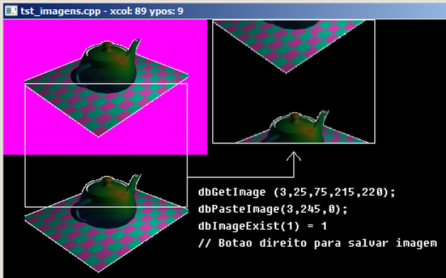

Curso completo de DarkGdk
Gameprog - Escola de programação de jogos digitais
Contato: gameprog.br@gmail.com
Fase 5.6
05.6 Além do bitmap
5.6 Visão geral
A DarkGdk possui a função dbLoadImage() que além do bitmap padrão consegue
carregar outros tipos de imagem:
.JPG - Imagem compactada jpeg
.BMP - Padrão popular nativo do Windows que você já conhece
.DIB - Outro tipo de imagem nativa do Windows
.TGA - muito frequente como textura nos trabalhos do 3D Studio MAX
.DDS - muito frequente como textura em trabalhos com DirectX e XBOX
.PNG - muito frequente como imagem nos sites da Internet
Todos esses tipos de imagem são interessantes por algum fator inerente a
elas. Os tipos TGA, DDS e PNG são interessantes porque trazem em si uma
cor transparente que é utilizada por outras funções da DarkGdk. Entre
outros usos que podemos fazer dessas imagens, elas vão ser utilizadas
valiosamente como texturas.
Elenco de funções de imagem
---------------------------------------------------------------------------
dbLoadImage ( sArquivo, nImg )
void dbLoadImage ( char* szFilename, int iImage )
Essa função carrega uma imagem (bmp, jpg, dig, dds, tga ou png)
identificando-a com o valor numérico nImg que será utilizado para se
trabalhar com essa imagem.
Ex.:
dbLoadImage ("c:\\gameprog\\gdkmedia\\bitmap\\magenta-transparente.bmp",1);
---------------------------------------------------------------------------
int dbImageExist ( nImg )
int dbImageExist ( int iImage )
Essa função verifica a existência de uma imagem (nImg) retornando 1 se a
imagem existe.
Ex.:
sprintf(txt, "dbImageExist(1) = %d", dbImageExist(1));
---------------------------------------------------------------------------
void dbPasteImage ( nImg, xpos, ypos )
void dbPasteImage ( int iImage, int iX, int iY )
Essa função cola uma imagem (nImg) na posição especificada (xpos, ypos).
Ex.:
dbPasteImage (1,320, 240);
---------------------------------------------------------------------------
void dbDeleteImage ( nImg )
void dbDeleteImage ( int iImage )
Essa função deleta a imagem especificada (nImg).
Ex.:
dbDeleteImage (1);
---------------------------------------------------------------------------
void dbGetImage ( nImg, nEsquerda, nTopo , nDireita, nFundo )
void dbGetImage ( int iImage, int iLeft, int iTop, int iRight, int iBottom )
Essa função monta uma nova imagem (nImg) a partir de um recorte do bitmap
corrente. (nEsquerda, nTopo) - (nDireita, nFundo) determina a área do recorte.
Geralmente você pode utilizar essa função para recortar os quadros de uma
animação estocados todos em um bitmap.
Ex.:
// Recorta e mostra um pedaço da tela
const int img_nova = 3;
dbGetImage (img_nova,25,75,215,220);
dbPasteImage(img_nova,245,0);
Você também pode usar essa função para recortar uma sequência de texturas. Quando
você for utilizar os recortes como textura coloque zero (0) depois do último
argumento nFundo; com isso a DarkGdk otimiza a imagem para textura.
---------------------------------------------------------------------------
void dbSetImageColorKey ( rtx, gtx , btx )
void dbSetImageColorKey ( int iRed, int iGreen, int iBlue )
Essa função redefine a cor transparente. Essa função deve ser usada antes de você
carregar ou fazer recortes de imagem.
Ex.:
dbSetImageColorKey(255,0,255); //Estabelece o magenta como cor transparente
---------------------------------------------------------------------------
void dbSaveImage ( sArquivo, nImg )
void dbSaveImage ( char* szFilename, int iImage )
Essa função salva a imagem especificada nImg no arquivo sArquivo especificado.
O tipo de imagem que vai ser salvo deve estar especificado no nome do arquivo
podendo ser .bmp, .jpg, .tga, .dds ou .png
Ex.:
// Recorta e salva a imagem no disco
dbGetImage (4,0,0,600,300);
dbSaveImage("tela.png",4);
MessageBox (0,"Ok Imagem gravada", "Gameprog", MB_OK);
dbDeleteImage(4);
---------------------------------------------------------------------------
---------------------------------------------------------------------------
Veja agora nosso programa exemplo:

// tst_imagens.cpp
// Esse programa mostra como usar as funções de imagem
#include "DarkGDK.h"
// Protótipo das funções
void initsys(); // inicializa o sistema
void showmousepos(void); // Mostra posição do mouse na barra da janela
void teste_imagem(void); // Realiza testes de imagem
void salvar_imagem(void); // Salva a imagem da tela no diretório do programa
// Essa função desenha uma caixa na posição (xpos, ypos)
void caixa( int xpos, int ypos, int nlargura, int naltura);
// Cores
const int nPreto = 0;
const int nBranco = 0xFFFFFF;
const int nAzul = 0x0000FF;
const int nVermelho = 0xFF0000;
const int nVerde = 0x00FF00;
const int nMagenta = 0xFF00FF;
// Alças/handles para nossas imagens
const int img_fonte = 1;
const int img_nova = 3;
const int img_tela = 0;
// ----------------------------------------------------------------------------
void DarkGDK ( void ) {
// Começo da aplicação DarkGdk
initsys();
// Exibe os testes de imagem
teste_imagem();
while ( LoopGDK ( ) ) {
showmousepos();
if (dbEscapeKey())
{
dbDeleteImage(img_fonte);
dbDeleteImage(img_nova);
return;
}
dbSync ( );
} // fim do while
return;
} // fim da função: DarkGDK
// ----------------------------------------------------------------------------
void initsys() {
// Esta função inicializa o sistema
dbSyncOn( ); dbSyncRate (60);
dbCLS(nPreto);
dbSetWindowTitle("tst_imagens.cpp");
dbDisableEscapeKey();
} // fim da função: initsys()
void teste_imagem(void) {
char txt[255];
int nlargura, naltura;
dbSetImageColorKey(255,0,255);
dbLoadBitmap ("c:\\gameprog\\gdkmedia\\bitmap\\magenta-transparente.bmp");
dbLoadImage ("c:\\gameprog\\gdkmedia\\bitmap\\magenta-transparente.bmp",img_fonte);
nlargura = 259; naltura = 159;
dbPasteImage (img_fonte,0, naltura);
// Recorta e mostra um pedaço da tela
dbGetImage (img_nova,25,75,215,220);
dbPasteImage(img_nova,245,0);
// Ilustra a área que foi recortada
caixa (25,75, 190, 145);
caixa (245,0, 190,145);
// Desenha seta
dbLine (215, 185, 340, 185);
dbLine (340, 185, 340, 155);
dbLine (340, 155, 331,166);
dbLine (340, 155, 349,166);
// Mostra legenda na tela
dbText ( 228, 195, "dbGetImage (3,25,75,215,220);" );
dbText ( 228, 215, "dbPasteImage(3,245,0);" );
sprintf(txt, "dbImageExist(1) = %d", dbImageExist(img_fonte));
dbText (228,235, txt);
dbText (228,255, "// Botao direito para salvar imagem");
} // teste_imagem().fim
// ----------------------------------------------------------------------------
void showmousepos() {
char txt[255];
int xpos, ypos;
// Obtém posição do mouse
xpos = dbMouseX(); ypos = dbMouseY();
// Mostra posição do mouse na barra de título da janela
sprintf (txt, "tst_imagens.cpp - xcol: %d ypos: %d ", xpos, ypos);
dbSetWindowTitle(txt);
// Se botão direito do mouse então grave a imagem no disco como tela.png
if (dbMouseClick() == 2)
{
// Estampe e mostre a hora e a data na imagem
dbText (230,280, dbGetTime());
dbText (330,280, dbGetDate());
dbSync();
// Recorta e salva a imagem no disco
dbGetImage (4,0,0,600,300);
dbSaveImage("tela.png",4);
MessageBox (0,"Ok Imagem gravada", "Gameprog", MB_OK);
dbDeleteImage(4);
} // endif
}// showmousepos().fim
// ----------------------------------------------------------------------------
void caixa( int xpos, int ypos, int nlargura, int naltura) {
// Variáveis de trabalho
int nEsquerda,nDireita,nTopo,nFundo;
// Obtém os quatro pontos da caixa
nEsquerda = xpos;
nTopo = ypos;
nDireita = xpos + nlargura;
nFundo = ypos + naltura;
// Liga os quatro pontos da caixa com linhas
dbLine(nEsquerda,nTopo,nEsquerda,nFundo);
dbLine(nEsquerda,nFundo,nDireita,nFundo);
dbLine(nDireita,nFundo,nDireita,nTopo);
dbLine(nDireita,nTopo,nEsquerda,nTopo);
} // caixa().fim